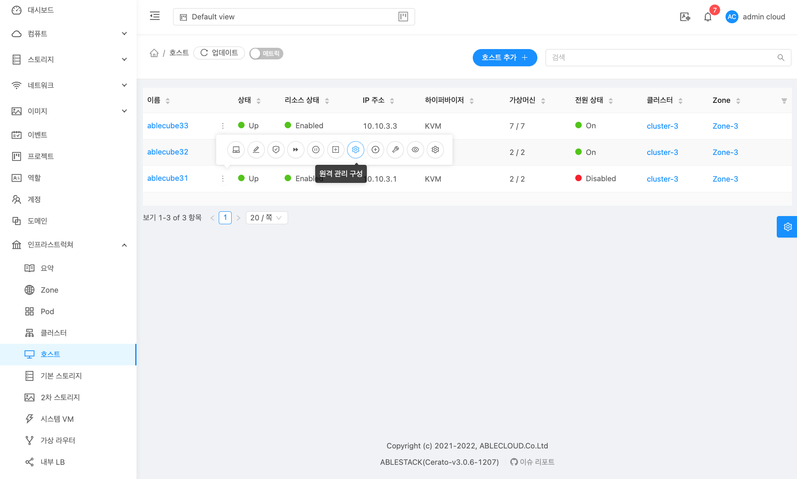
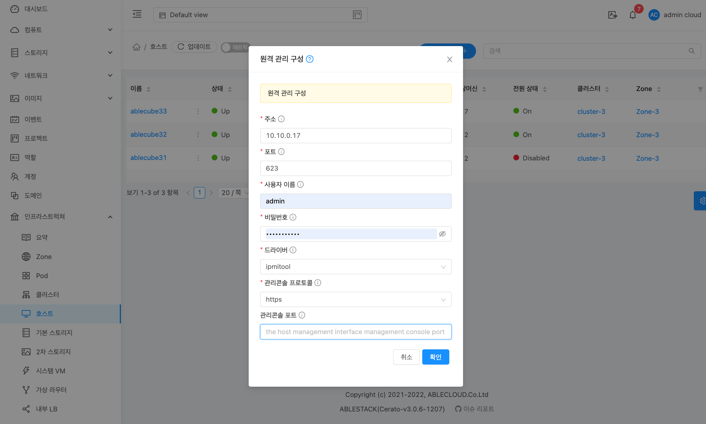
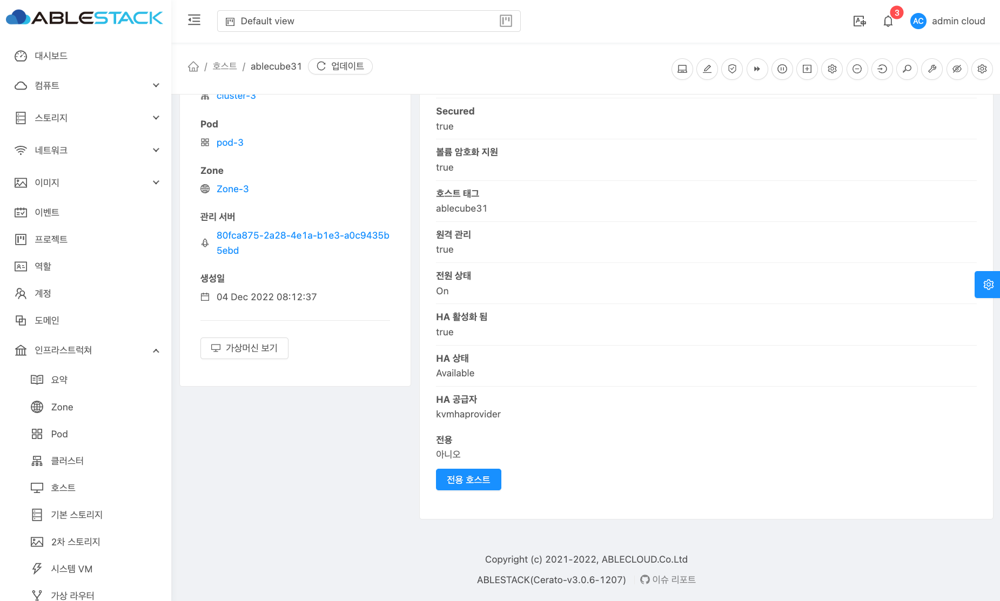
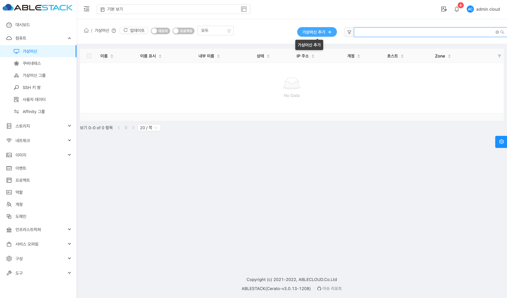
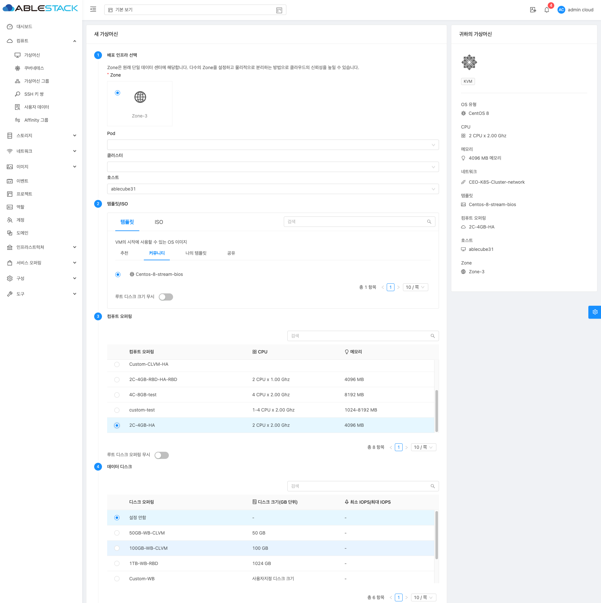
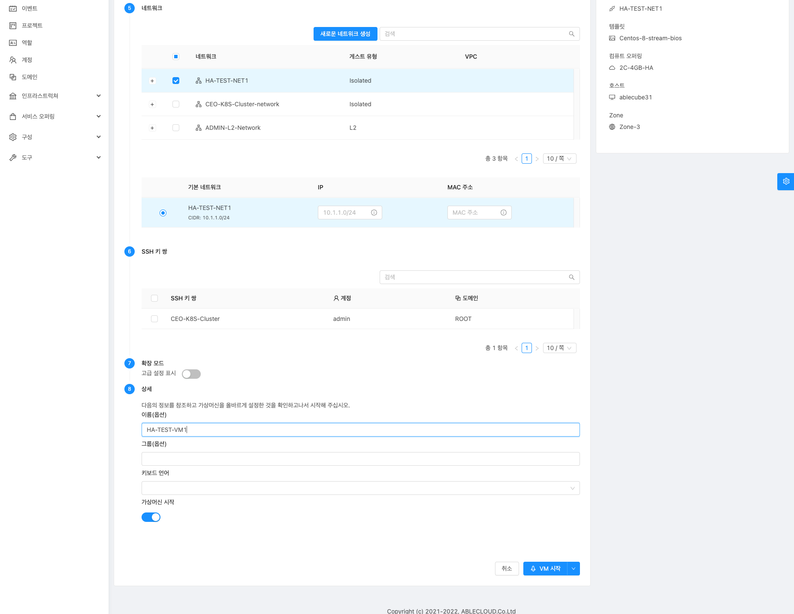
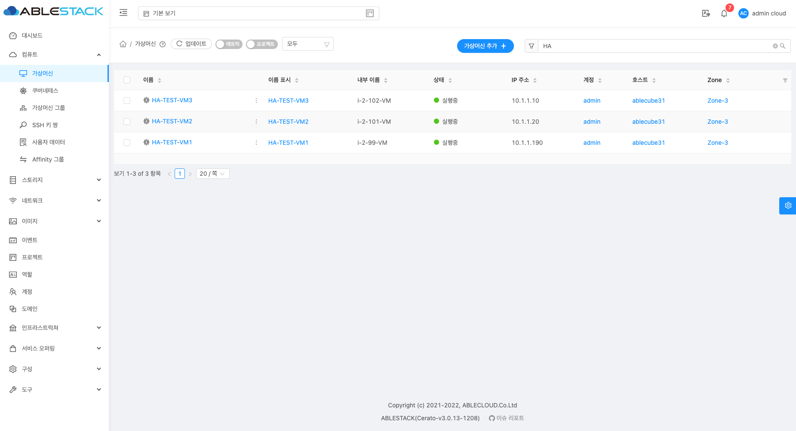

고가용성(HA) 관리¶
관리 서버용 HA¶
Mold 관리 서버는 개별 서버 장애에 영향을 받지 않도록 다중 노드 구성으로 배포해야합니다. 관리 서버 자체(MySQL 데이터베이스와 구별됨)는 스테이트리스(Stateless)이며 로드 밸런서 뒤에 배치될 수 있습니다.
호스트가 정상 운영되는 것에 모든 관리 서비스 중단의 영향을 받지 않기 때문에 모든 게스트 VM은 계속 작동합니다.
관리 서버가 다운되면 새 VM을 만들 수 없으며 최종 사용자 및 관리 UI, API, 동적 부하 분산 및 HA가 작동하지 않습니다.
관리 서버 부하 분산¶
Mold는 로드 밸런서를 사용하여 여러 관리 서버에 가상 IP를 제공할 수 있습니다. 관리자는 관리 서버에 대한 로드 밸런서 규칙을 생성할 책임이 있습니다. 응용 프로그램에는 여러 세션에 걸쳐 지속성 또는 고정성이 필요합니다. 다음 차트에는 로드 밸런싱해야하는 포트와 지속성이 필요한지 여부가 나열되어 있습니다.
지속성이 필요하지 않더라도 활성화할 수 있습니다.
| Source 포트 | 목적지 포트 | 프로토콜 | 지속성이 필요합니까? |
|---|---|---|---|
| 80 또는 443 | 8080 (또는 AJP가있는 20400) | HTTP (또는 AJP) | 예 |
| 8250 | 요소 자신을 기준으로 배치 | TCP | 예 |
| 8096 | 위치 상 부모(조상)요소를 기준으로 배치 | HTTP | 아니요 |
위의 설정 외에도 관리자는 관리 서버 IP에서 로드 밸런서 가상 IP 주소로 '호스트' 글로벌 구성 값을 설정해야합니다. '호스트'값이 포트 8250의 VIP로 설정되지 않고 관리 서버 중 하나가 충돌하는 경우 UI는 계속 사용할 수 있지만 시스템 VM은 관리 서버에 연결할 수 없습니다.
HA 지원 가상 머신¶
사용자는 가상 머신을 HA 지원으로 지정할 수 있습니다. 기본적으로 모든 가상 라우터 VM 및 Elastic Load Balancing VM은 HA 지원으로 자동 구성됩니다. HA 지원 VM이 충돌하면 Mold는 충돌을 감지하고 동일한 Zone 내에서 VM을 자동으로 다시 시작합니다. HA는 다른 Zone에서 수행되지 않습니다. Mold는 VM 다시 시작에 대한 보수적인 정책을 가지고 있으며 동시에 실행되는 동일한 VM의 두 가상머신이 없도록 합니다. Management Server는 동일한 클러스터의 다른 호스트에서 VM을 시작하려고 합니다.
HA 기능은 iSCSI 또는 NFS 기본 스토리지에서 작동합니다. 로컬 스토리지가 있는 HA는 지원되지 않습니다.
호스트 용 HA¶
사용자는 가상 머신을 HA 지원으로 지정할 수 있습니다. 기본적으로 모든 가상 라우터 VM 및 Elastic Load Balancing VM은 HA 지원으로 자동 구성됩니다. HA 지원 VM이 충돌하면 Mold는 충돌을 감지하고 동일한 Zone 내에서 VM을 자동으로 다시 시작합니다. HA는 다른 Zone에서 수행되지 않습니다. Mold는 VM 다시 시작에 대한 보수적인 정책을 가지고 있으며 동시에 실행되는 동일한 VM의 두 가상머신이 없도록 합니다. Management Server는 동일한 클러스터의 다른 호스트에서 VM을 시작하려고 합니다.
HA 기능은 iSCSI 또는 NFS 기본 스토리지에서 작동합니다. 로컬 스토리지가 있는 HA는 지원되지 않습니다.
전용 HA 호스트¶
하나 이상의 호스트는 호스트 장애로 인해 다시 시작되는 HA가 지원되는 VM에서만 사용하도록 지정할 수 있습니다. 이러한 전용 HA 호스트 풀을 모든 HA 지원 VM의 복구 대상으로 설정하면 다음과 같은 경우에 유용합니다.
- Mold 고 가용성 기능의 일부로 다시 시작된 VM을 쉽게 확인할 수 있습니다. VM이 전용 HA 호스트에서 실행 중인 경우 원래 호스트가 실패한 HA 지원 VM이어야합니다. (한 가지 예외 : 관리자가 모든 VM을 전용 HA 호스트로 수동으로 마이그레이션할 수 있습니다.)
- HA 지원 VM이 다른 용도로 예약될 수 있는 호스트에서 다시 시작되지 않도록 합니다.
전용 HA 옵션은 호스트 생성 시 특수 호스트 태그를 통해 설정됩니다. 관리자가 HA 지원 VM에만 호스트를 할당할 수 있도록하려면 전역 구성 변수 ha.tag를 원하는 태그 (예 : "ha_host")로 설정하고 Management Server를 다시 시작합니다. HA 지원 VM 전용 호스트를 추가할 때 호스트 태그 필드에 값을 입력합니다.
Note
ha.tag를 설정한 경우 클라우드에 있는 하나 이상의 호스트에서 실제로 해당 태그를 사용해야 합니다. ha.tag에 지정된 태그가 클라우드의 호스트에 대해 설정되지 않은 경우 HA 지원 VM이 충돌 후 다시 시작되지 않습니다.
운영 스토리지 중단 및 데이터 손실¶
기본 스토리지 중단이 발생하면 하이퍼 바이저는 해당 스토리지 장치에 저장된 모든 VM을 즉시 중지합니다. HA로 표시된 게스트는 기본 스토리지가 다시 온라인 상태가 되면 가능한 한 빨리 다시 시작됩니다. NFS를 사용하면 하이퍼 바이저가 문제의 성격에 따라 가상 머신이 계속 실행되도록 할 수 있습니다. 예를 들어 NFS 중단으로 인해 스토리지 연결이 복원될 때까지 게스트 VM이 일시 중단됩니다. 기본 스토리지는 백업되도록 설계되지 않았기 때문에 기본 스토리지의 개별 볼륨은 스냅샷을 사용하여 백업할 수 있습니다.
2차 스토리지 중단 및 데이터 손실¶
2차 스토리지 서버가 하나만 있는 Zone의 경우 2차 스토리지 중단은 시스템에 기능 수준의 영향을 주지만 실행 중인 게스트 VM에는 영향을 주지 않습니다.
2차 스토리지 중단으로 인해
- 사용자용으로 선택한 템플릿으로 VM을 생성하지 못할 수 있습니다.
- 사용자가 스냅샷을 저장하거나 저장된 스냅샷을 검사 / 복원하지 못할 수도 있습니다.
이러한 기능은 2차 스토리지가 다시 온라인 상태가 되면 자동으로 사용할 수 있습니다.
2차 스토리지 데이터 손실은 템플릿, 스냅샷 및 ISO 이미지를 포함하여 최근에 추가된 사용자 데이터에 영향을 줍니다. 2차 스토리지는 주기적으로 백업해야 합니다. 시스템의 확장 성을 높이기 위해 각 영역 내에서 여러 2차 스토리지 서버를 프로비저닝할 수 있습니다.
데이터베이스 고가용성¶
Mold의 내부 데이터를 저장하는 데이터베이스의 고가용성을 보장하기 위해 데이터베이스 복제를 설정할 수 있습니다. 여기에는 기본 Mold 데이터베이스와 사용량 데이터베이스가 모두 포함됩니다. 복제는 MySQL 커넥터 매개 변수 및 양방향 복제를 사용하여 수행됩니다. (MySQL 5.1 및 5.5로 테스트 되었습니다.)
데이터베이스 복제를 설정하는 방법¶
Mold의 데이터베이스 복제는 MySQL 복제 기능을 사용하여 제공됩니다. 복제 설정 단계는 MySQL 문서에서 찾을 수 있습니다 (링크는 아래에 제공됨). 두 개의 데이터베이스 노드를 포함하는 양방향 복제를 설정하는 것이 좋습니다. 이 경우 예를 들어 node1 및 node2가 있을 수 있습니다.
세 개 이상의 노드를 포함하는 체인 복제를 설정할 수도 있습니다. 이 경우 먼저 node1 및 node2를 사용하여 양방향 복제를 설정합니다. 다음으로 node2에서 node3으로 단방향 복제를 설정합니다. 그런 다음 모든 추가 노드에 대해 node3에서 node4 로의 단방향 복제를 설정합니다.
참고 문헌 :
- http://dev.mysql.com/doc/refman/5.0/en/replication-howto.html, 2021-04-22
- https://wikis.oracle.com/display/CommSuite/MySQL+High+Availability+and+Replication+Information+For+Calendar+Server, 2021-04-22
데이터베이스 고가용성 구성¶
데이터베이스 고 가용성 동작을 제어하려면 /etc/cloudstack/management/db.properties 파일에서 다음 구성 설정을 사용하십시오.
필수 설정
db.properties에서 다음과 같이 설정했는지 확인하십시오.
-
db.ha.enabled: 복제 기능을 사용하려면 true로 설정합니다.
예: db.ha.enabled=true
-
db.cloud.slaves: 클라우드 데이터베이스에 대해 쉼표로 구분된 슬레이브 호스트 세트로 설정됩니다. 복제로 설정된 노드 목록입니다. 마스터 노드는 등록 정보 파일의 다른 곳에서 이미 언급되었으므로 목록에 없습니다.
예: db.cloud.slaves=node2,node3,node4
-
db.usage.slaves: 사용 데이터베이스에 대해 쉼표로 구분된 슬레이브 호스트 세트로 설정합니다. 복제로 설정된 노드 목록입니다. 마스터 노드는 등록 정보 파일의 다른 곳에서 이미 언급되었으므로 목록에 없습니다.
예: db.usage.slaves=node2,node3,node4
옵션 설정
다음 설정은 db.properties에 있어야 하지만 튜닝 목적으로 변경하지 않으려면 기본값을 변경할 필요가 없습니다.
-
db.cloud.secondsBeforeRetryMaster: 마스터가 다운된 후 마스터에 다시 연결을 시도하기 전에 MySQL 커넥터가 기다려야 하는 시간 (초)입니다. 기본값은 1 시간입니다. db.cloud.queriesBeforeRetryMaster에 먼저 도달하면 재시도가 더 빨리 발생할 수 있습니다.
예: db.cloud.secondsBeforeRetryMaster=3600
-
db.cloud.queriesBeforeRetryMaster: 마스터가 다운된 후 마스터에 다시 연결을 시도하기 전에 데이터베이스로 보낼 최소 쿼리 수입니다. 기본값은 5000입니다. db.cloud.secondsBeforeRetryMaster에 먼저 도달하면 재시도가 더 빨리 발생할 수 있습니다.
예: db.cloud.queriesBeforeRetryMaster=5000
-
db.cloud.initialTimeout: 마스터에 다시 연결하기 전에 MySQL 커넥터가 기다려야 하는 초기 시간입니다. 기본값은 3600입니다.
예: db.cloud.initialTimeout=3600
데이터베이스 고가용성에 대한 제한¶
이 기능의 현재 구현에는 다음과 같은 제한 사항이 있습니다.
- 슬레이브 호스트는 Mold를 통해 모니터링할 수 없습니다. 별도의 모니터링 수단이 필요합니다.
- 데이터베이스 측의 이벤트는 Mold 관리 서버 이벤트 시스템과 통합되지 않습니다.
- 데이터베이스 노드에서 복제에 의해 생성된 bin 로그 파일을 주기적으로 수동 정리해야 합니다. 로그 파일을 정리하지 않으면 디스크가 가득 찰 수 있습니다.
HA 활성화 및 구현 시나리오¶
MOLD에서 제공하는 고가용성 기능을 실제 적용하고 테스트 하기 위한 참고문서입니다.
HA 기능을 구현하려면 :
-
Zone HA 활성화
-
클러스터 HA 활성화
Note
클러스터 HA 활성화 모달에서 호스트 포함 체크 시 호스트에 HA 활성화 일괄 적용됩니다.
-
Host OOBM 구성
- 인프라스트럭쳐 > 호스트 메뉴 이동
-
더보기 툴팁 액션에 원격 관리 구성 버튼 클릭 
-
HA 활성화 모달에서 주소, 포트, 사용자 이름, 비밀번호, 드라이버, 관리콜솔 프로토콜 입력 후 확인 버튼 클릭 
Note
추가된 각 호스트에 같은 작업으로 진행하세요.
-
OOBM 활성화
Note
추가된 각 호스트에 같은 작업으로 진행하세요.
-
Host HA 상태 확인
- 호스트 목록 > 상세화면 이동
- 우측 하단 상세 항목중 HA 상태 : Available 와 HA 공급자 : kvmhaprovider 임을 확인 
-
HA용 컴퓨트 오퍼링 생성
-
셧다운 할 호스트에 가상머신 생성
- 컴퓨트 > 가상머신 메뉴 이동
- 우측 상단 가상머신 추가 버튼 클릭 
- 가상머신 추가 모달에서 가상머신 생성 옵션 선택 및 입력

- 호스트 는 셧다운 할 호스트 선택("ablecube31")
- 템플릿 선택
- 컴퓨트 오퍼링 값은 위에서 생성한 HA용 컴퓨트 오퍼링(2C-4GB-HA) 선택 
- 네트워크 선택
- 이름(옵션) 입력("HA-TEST-VM1", "HA-TEST-VM2", "HA-TEST-VM3" 3가지)
Note
가상머신 갯수 3개로 생성 후 테스트 진행
- 생성된 테스트용 가상머신 3가지와 생성된 호스트("ablecube31") 위치 확인 
-
호스트 셧다운 후 HA 기능 확인(가상머신 마이그레이션)
{kind=link}
{kind=link}
{kind=link}
{kind=link}
{kind=link}
{kind=link}
{kind=link}
{kind=link}
{kind=link}
{kind=link}
{kind=link}
{kind=link}
{kind=link}
{kind=link}
{kind=link}
{kind=link}
{kind=link}
{kind=link}